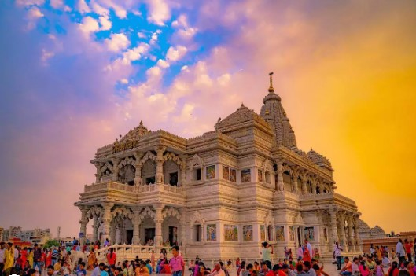

special about prem mandir
prem mandir is a hindu temple in vrindavan, mathura. it is maintained by jagadguru kripalu parishat, an international non-profit,educational,spiritual, charitabletrust. the complex is on 54- acre site on the outskirts of vrindavan, and is dedicated to LORD RADHA KRISHNA and RAM SITA.
n
the beauty of prem mandir
it has beautiful sculptures and well crafted architecture. the temple is very spacious and offer krishna leela depication all around the parikarmas passages. the cleaniness comes as a plesent surprise to top all especially if you have visited other temple at vrindavan.